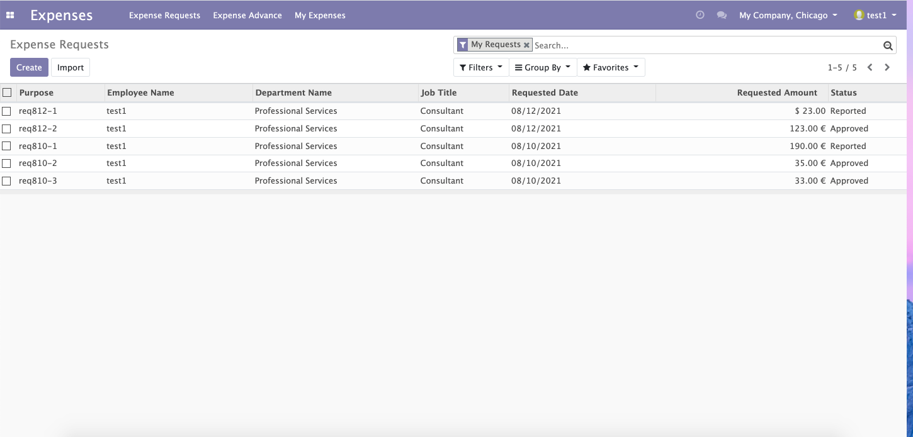
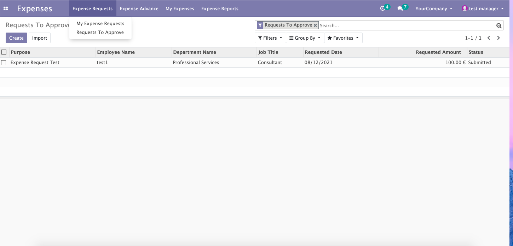
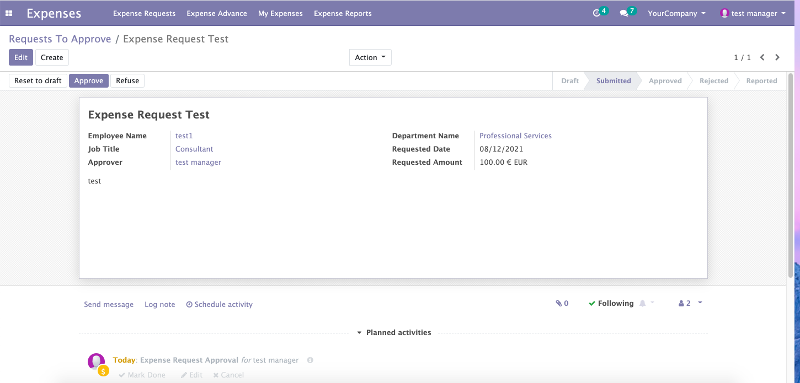
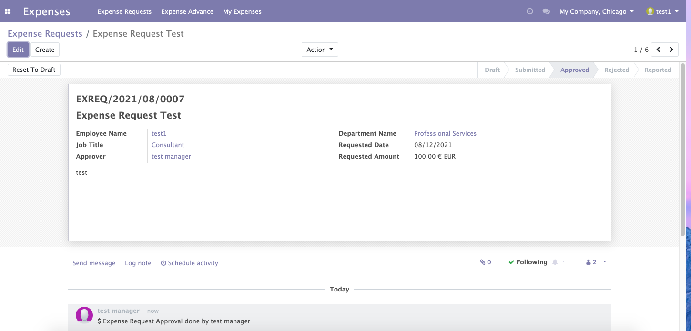
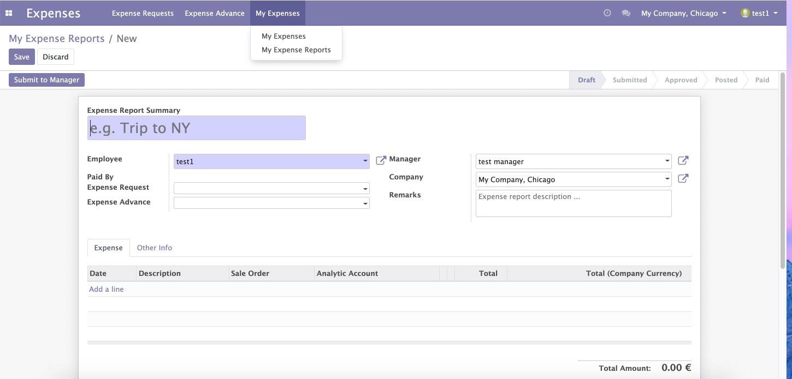
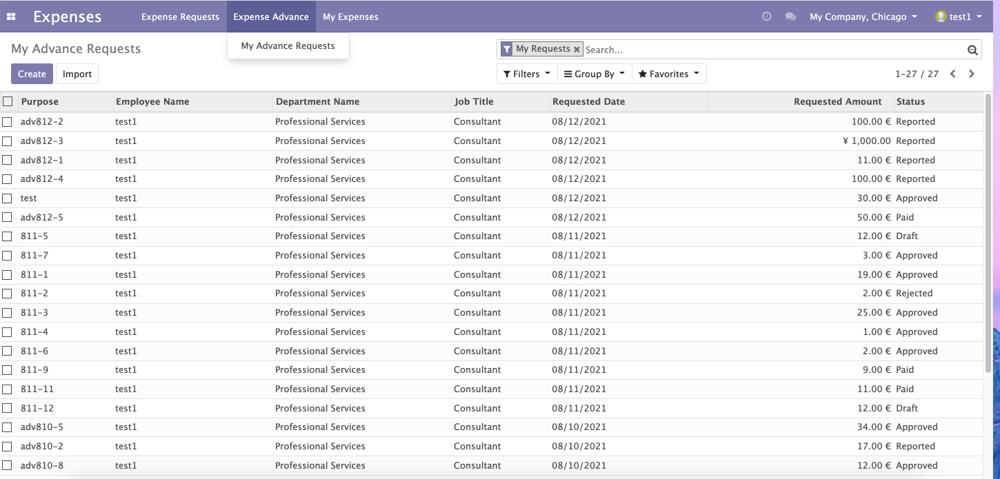
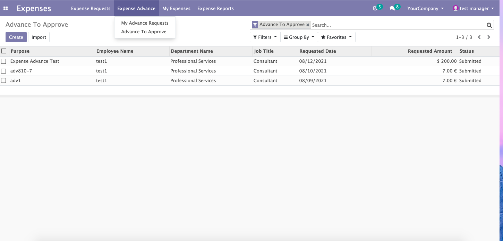
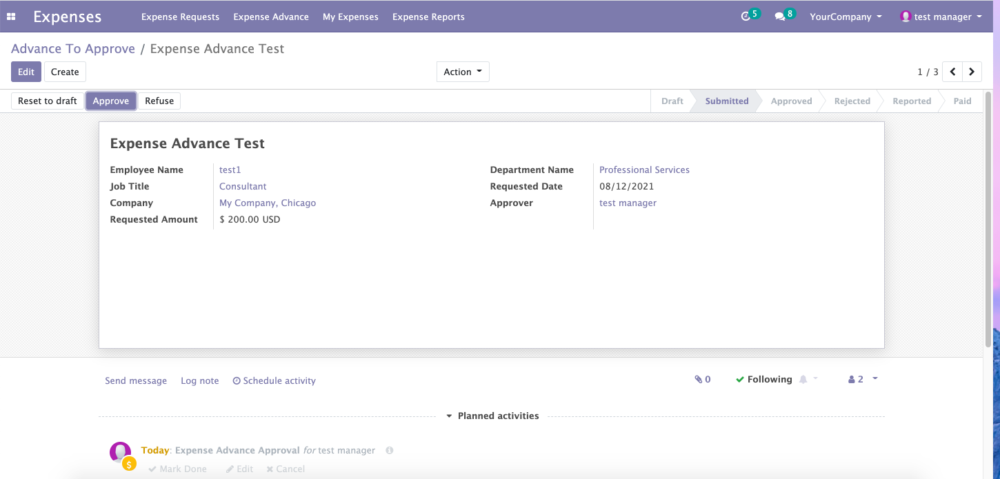
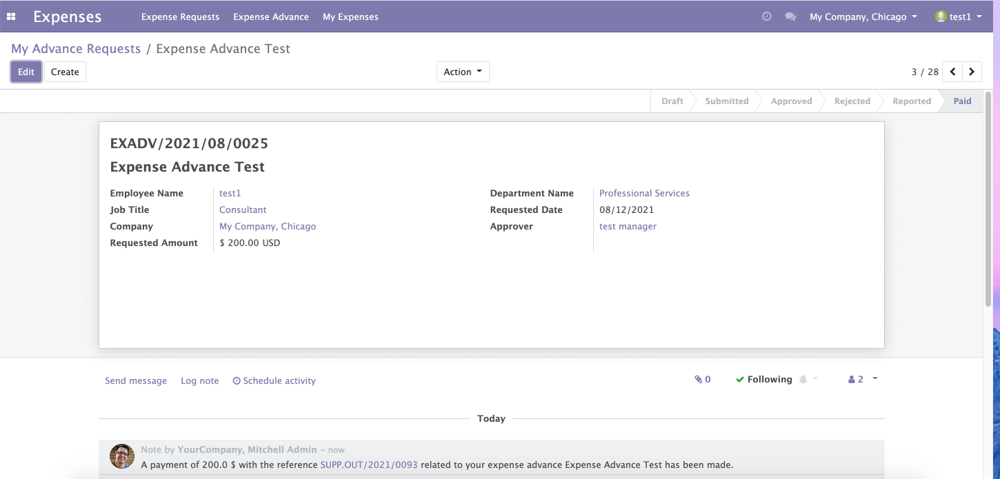
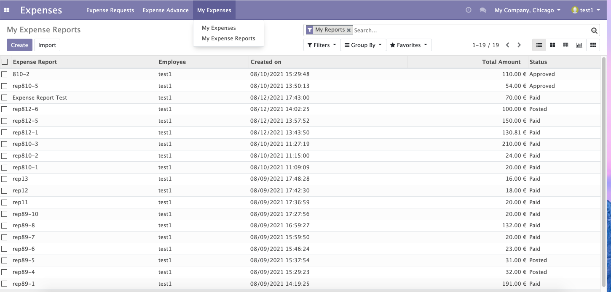

Login as normal employee: test1, go to Expense Requests to see all his/her own Expense Requests, create a new one.

Create a new Expense Request, set the 'Approver" who should approve this expense request(by default it's the employees' expense manager or reporting manager), the 'Approver' should have 'Expense Officer' role.
Set the 'Requested Amount', the amount must be bigger than 0.00 and the currency can be selected with supported currencies.
Then submit the request, the 'Approver' will get email notification for new expense request approval.
Login as Expense Request Approver: test manager. Got to 'Expense Requests->Requests To Approve' to see Expense Requests pending approval.
Open an Expense Request to approve or refuse it.
The employee will get approved notification and can see the Expense Request status changed to 'Approved'.
The employee can go to 'My Expenses->My Expense Reports' to claim the expense.

The employee can select the approved Expense Request in expense report form to specify which Expense Request she/he want to report in this Expense Report.
In the Amount section at the bottom, 'Request Amount' shows the amount approved in Expense Request, and 'Return to Employee' shows the amount the company need to pay to employee, later it will show on register payment page.
Then submit the Expense Report, the 'Manager' will get email notification for new expense report approval.
Login as 'Manager': test manager, go to 'Expense Reports->To Approve' to see Expense Reports that pending approval.
The 'Manager' can approve or refuse the Expense Report
Login as 'Billing Manager': Mitchell Admin. Go to 'Expense Reports->To Post' to see approved Expense Reports which are waiting for Post, open one and click 'Post Journal Entries'
Go to 'Expense Reports->To Pay' to register payment for the posted Expense Reports, validate the payment.
Login as employee, can see the Expense Request status changed to 'Reported' and Expense Report status changed to 'Paid'.
This Expense Request will not show in other Expense Report.
Login as employee: test1, go to Expense Advance to see all his/her own Expense Advance Requests, create a new one.

Create a new Expense Advance request, set the 'Approver" who should approve this expense in advance(by default it's the employees' expense manager or reporting manager), the 'Approver' should have 'Expense Officer' role.
Set the 'Requested Amount', the amount must be bigger than 0.00 and the currency can be selected with supported currencies.
Then submit the request, the 'Approver' will get email notification for new expense advance request approval.
Login as Expense Advance Request Approver: test manager. Got to 'Expense Advance->Advance To Approve' to see Expense Advance Requests pending approval.
Open an Expense Advance Request to approve or refuse it.

Login as 'Billing Manager': Mitchell Admin. Go to 'Expense Advance->Advance To Pay' to see approved Expense Advance which are waiting for payment.
Select right 'Payment Method' (the payment journal company must be same as the advance request company), then click 'Register Payment'.
Then 'Validate' the payment.
The employee will get approved notification and can see the Expense Advance Request status changed to 'Paid'.
The employee can go to 'My Expenses->My Expense Reports' to claim the expense.

The employee can select the approved Expense Advance Request in expense report form to specify which Expense Advance Request she/he want to reported in this Expense Report.
In the Amount section at the bottom, 'Advance Amount' shows the amount paid in Expense Advance Request, and 'Return to Employee' shows the amount the company need to pay to employee,
later it will show on register payment page.
If the currency in advance is different than the report currency, the module will change the advance amount to amount in report currency.
So the 'Return to Employee' amount will show as 'Total Amount-Advance Amount' in report company currency. In this case, the 200USD advance amount will change to 130.81EUR, the return amount will be 109.19EUR.
Then submit the Expense Report, the 'Manager' will get email notification for new expense report approval.
Login as 'Manager': test manager, go to 'Expense Reports->To Approve' to see Expense Reports that pending approval.
The 'Manager' can approve or refuse the Expense Report
Login as 'Billing Manager': Mitchell Admin. Go to 'Expense Reports->To Post' to see approved Expense Reports which are waiting for Post, open one and click 'Post Journal Entries'
Go to 'Expense Reports->To Pay' to register payment for the posted Expense Reports
Please note, the module will count expense advance here, so the payment only pay the return amount, not the total amount. In this case is 109.19EUR, not 240EUR
because company already paid 130.81EUR in advance.
Please note, if the expense report total is less than expense advance paid, means the employee need to pay back to company, then no payment will be created in this step.
Login as employee, can see the Expense Advance status changed to 'Reported' and Expense Report status changed to 'Paid'.
This Expense Advancew will not show in other Expense Report.